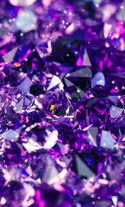
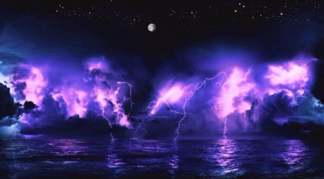
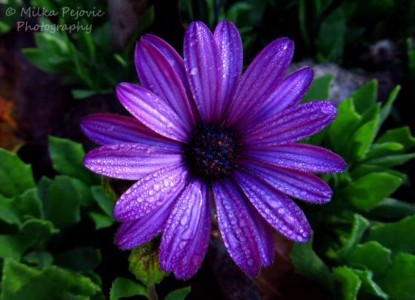
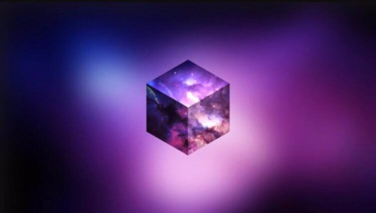
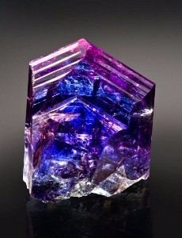
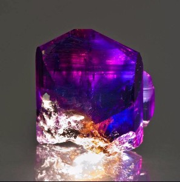
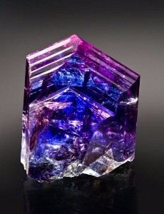
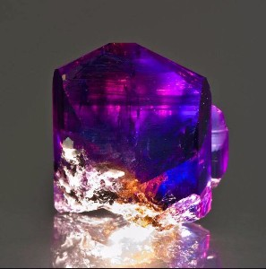

The above image displays
a large amount of
violet-hued diamonds.

The above image displays
a visualzation of a purple
horse created by water.

The above image displays an indigo-themed
electrical storm.

The above image displays an purple aster
flower.

The above image displays a galaxy-
themed cube.
 


